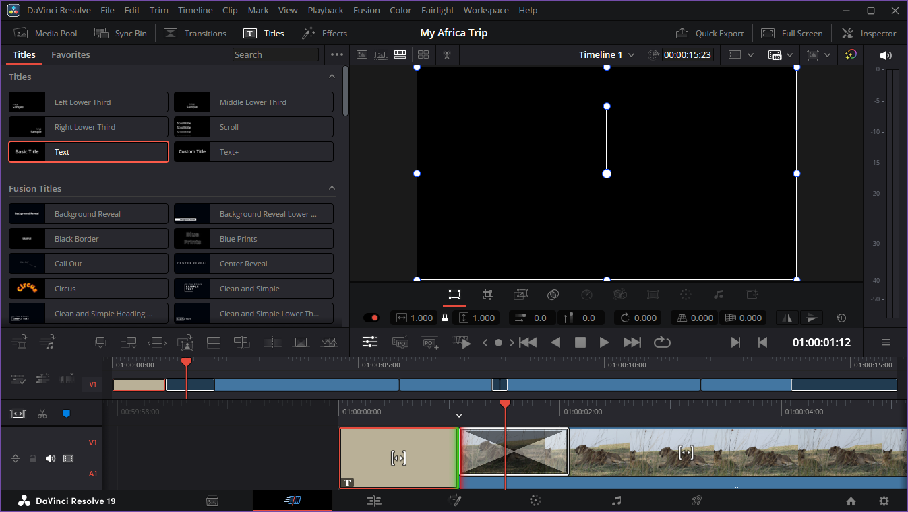

Add Text to the Timeline
Overview
Use text to introduce scenes, label content, or highlight key information. You can add text as a separate element on the timeline and adjust its position, duration, and style to match your video. This gives you control over when and how text appears during playback.
Procedure: Add text in the Cut Page
- Select Titles in the toolbar
- Choose a title and drag it into the timeline
- Select Inspector in the toolbar
- Edit your title content and style
- Adjust the title duration by changing its start or end point in the timeline.

Procedure: Add text in the Edit Page
- Select Effects in the top toolbar
- Go to Toolbox > Titles and drag a title into the timeline
- Select Inspector in the toolbar
- Edit your title content and style
- Adjust the title duration by changing its start or end point in the timeline.
Titles are added to the timeline as a Clip. Place a title over top of video by adding it to another layer. See also: Work with Audio and Video Layers